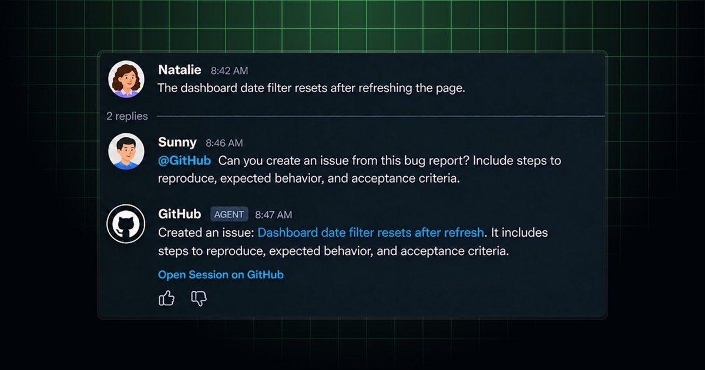
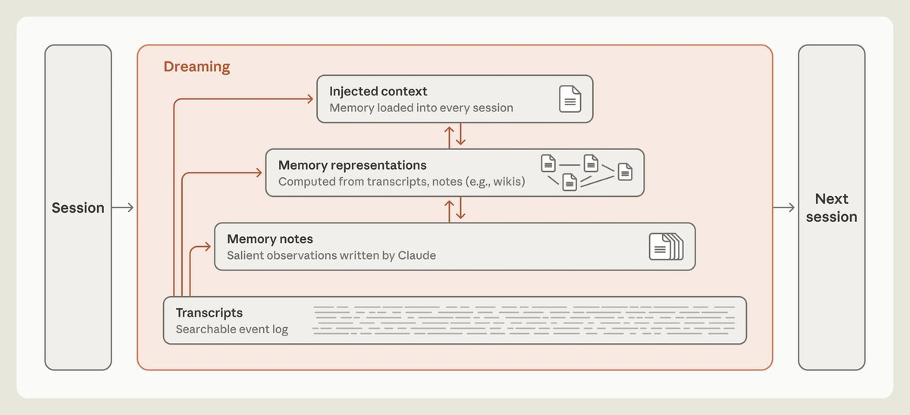
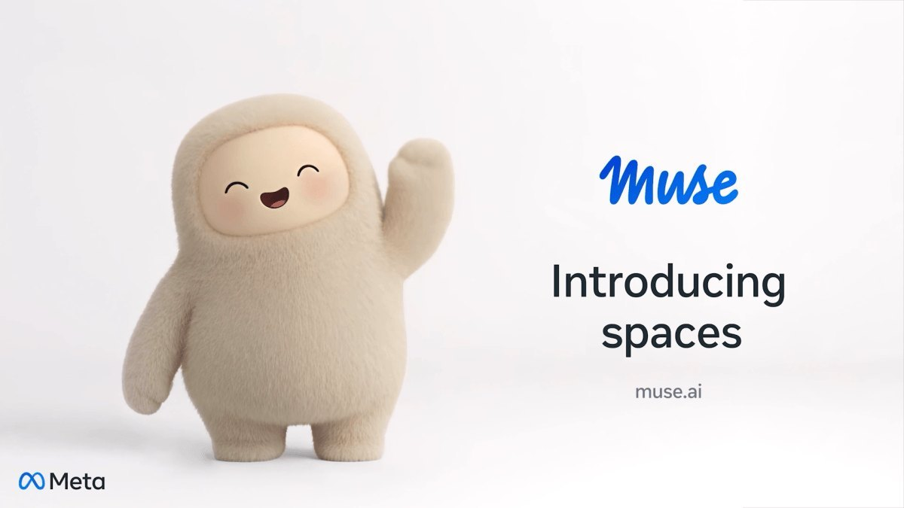
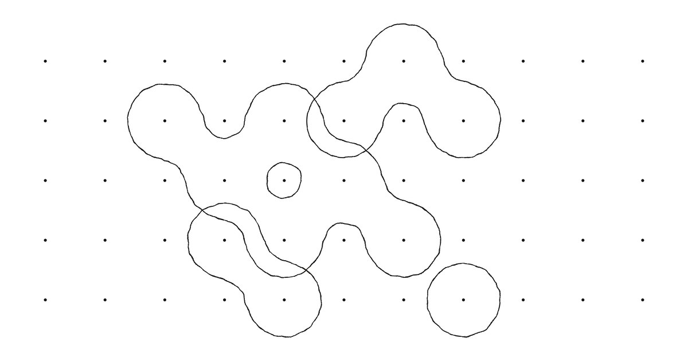

AI
Brief
Friday edition
GitHub's coding agent goes live in Slack and Teams
Also: Claude tidies its own memory offline, Muse learns to remember and persevere, Vercel gives chat agents native cards and a quiet-by-default model, and Thinking Machines ships a second model.
What matters today

GitHub in Teams
GitHub's coding agent is now generally available in Slack and Teams.
- Canvas in Teams: a thread turns into issues and pull requests; plans, code changes and previews open beside it for review.
- Attribution: each issue or pull request it opens names the Slack or Teams conversation and the person who asked; repository pickup needs no extra step.
Why it mattersCode review has moved into the chat thread. Copy the side panel for reviewing agent output in place, and the provenance line on every artifact an agent creates.

Dreaming for memory
Anthropic explains how Claude organizes its own memory.
- Dreaming: an offline pass where Claude rereads its transcripts to fix notes and build wikis; on Pokémon Red, Fable 5 kept nine memory files where Sonnet 3.7 wrote 413.
- Wikis: on a 350,000-file corpus, scaling dreaming from two to 128 sessions lifted answers from 13% to 48%; wiki plus search beat search alone 87% to 73%.
Why it mattersMemory is capture and consolidation, and most agent products only do the first. Budget an offline pass that checks notes against logs, and keep the always-loaded layer small.

Muse learns to persist
Meta ships Wonder-trained models and spaces to every Muse user.
- Active Memory: tasks correctly using critical context rose from 76% to 90%; the models separate stale from relevant information.
- Active Focus: Meta's figure is a 67% improvement in finishing tasks that hit a snag. Spaces, mini apps a person describes and Muse builds, are live wherever Muse is.
Why it mattersMeta is distilling its frontier model into the two behaviours a consumer agent needs, remembering and persevering. Evaluate agents on context retention and recovery, not leaderboard scores.
Agents in team Chat
Vercel's Chat SDK streams native cards; Ampersand arrives on AI Gateway.
- json-render: the agent writes a JSON spec against a typed catalogue of tables, charts and buttons; adapters post it as Block Kit or an Adaptive Card and update it as it streams.
- Ampersand: from Humans&, a model that decides each turn whether to speak or pass in a group chat; free on AI Gateway through November 13.
Why it mattersKnowing when not to talk is now a model capability you can rent. With structured cards, a bot in a busy channel stops being noise. Test its pass decisions on your own threads first.

Inkling 2 Small
Thinking Machines introduces Inkling 2 Small, 594B parameters, 17B active.
- Model: released November 5 with image input and variable effort; a score of 31 on the Artificial Analysis Intelligence Index; trained with RL on long-horizon coding tasks.
- Stage: on Tinker with closed weights; Apache 2.0 weights intended next week after safety testing. A reported $5 billion round led by Accel values it at $40 billion pre-money.
Why it mattersA second lab is committing to open weights a week after launch. If they land, an agent-trained 17B-active model is a self-host option to benchmark against the Chinese open models.
Also in AI today
- Copilot Cowork: Power Platform connectors now follow Microsoft 365 admin center allow and block settings; rollout completes mid-November. Power Platform DLP policies do not apply to Cowork.
- GitHub Copilot: code review settings via REST and GraphQL APIs, balanced reviews use three reviewer models; the impact dashboard adds Chat and VS Code agents.
- Microsoft security: since October, Storm-3358 has used the agentic offensive framework ARTEX against financial firms; indicators of compromise published.
- Claude Code 2.1.319: MCP tasks move to the background and report back; a denyInsteadOfPrompting permission setting. Enterprise project tags for cost codes, in beta.
- OpenAI: BioBasicsBench, 100 wet-lab tasks built with Ligo. OpenAI's figures: GPT-6 Astra 66.7% of rubric credit, GPT-5.6 Sol 43.8%. Also a Hacktron partnership to test third-party connections.
- Salesforce Koa Decisions: a decision model built on Gemma for single-step calls such as routing, with multimodal input; in routing tests, about 26 ms against 1.4 s for an LLM. Demo on Agentforce Labs.
- Dropbox (November 5): plans to buy Tigris Data, S3-compatible storage for AI; DBX Agent Cloud; agentic features at 70,000 teams, usable from ChatGPT, Claude and Muse.
- Amazon: Kimi K3.1 Pro on Bedrock in every region via cross-region inference; Alexa for Shopping by text starts for a small invited US group.
- Cursor: voice chat with agents on desktop, web and iOS, running on Grok Voice; Devin Review 2.0 (November 5): default PR review with Devin, per-PR cost down 82% since August.
- LangChain (November 5): async subagents for Deep Agents in Python, JavaScript and the managed service; an orchestrator starts, checks, updates and cancels background tasks. Notifications in beta.
- Atlassian Forge: apps can act on behalf of unverified users, including email-created service desk customers; Factory: User Groups from the identity provider set usage limits and model access.
- DeepSeek Harness: DeepSeek's figures, 1.54 million daily users on the official API as of November 4 and about 35,000 third-party plugins; an official plugin marketplace is planned.
- Agent identity in China: an identity registration and resolution platform for agents shown at the Wuzhen summit, still in pilot; 20 organizations signed an eight-point self-discipline pact.
- Policy: the US Justice Department formed a Super Intelligence Task Force (November 5) to prosecute misuse of advanced AI; Canada's budget funds a digital safety regulator with $176.3 million over five years.
- Gemini Notebook: flashcards gain images, an optional stopwatch and mobile study reminders, announced in a post on X and rolling out.
- Money: OpenAI reportedly raised $11 billion so far at a $1.25 trillion valuation in a round that could reach $20 billion; Anthropic's IPO buyers reportedly see as low as $1.1 trillion.